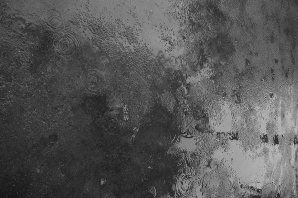
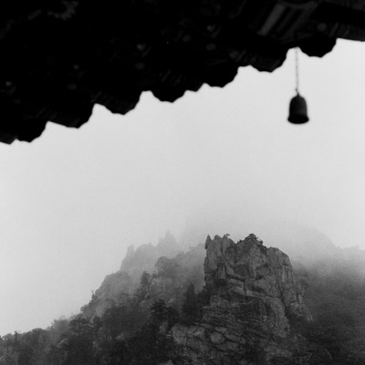
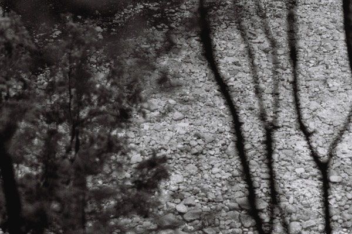
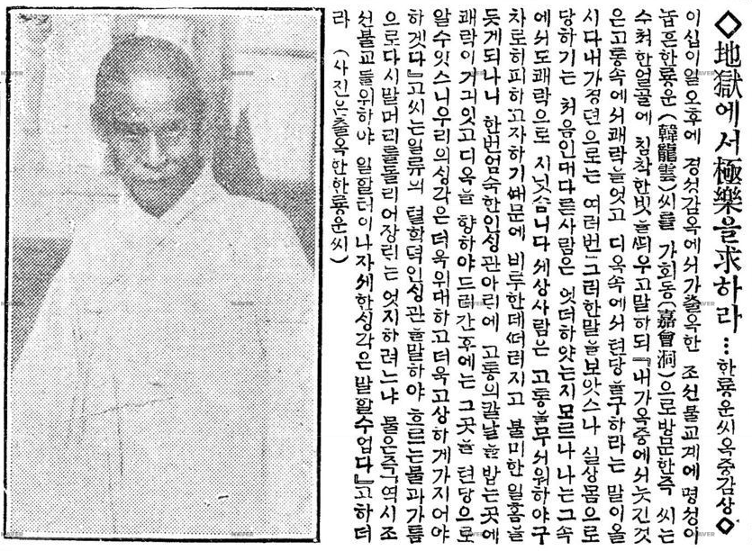
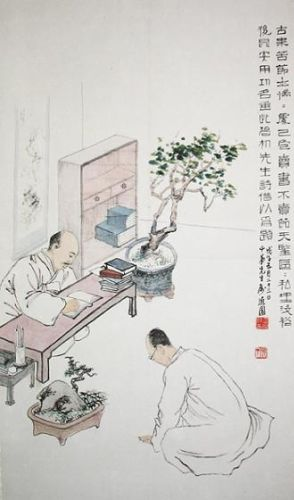
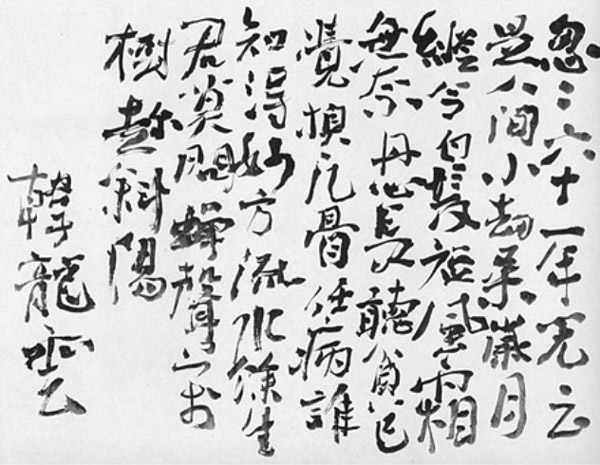

붉게 타오르는 성곽 아래 연꽃이 피어나 — 심우장 배관기
붉게 타오르는 성곽 아래
사대문 안을 감싸는 도성의 북쪽 성곽은 북악산 줄기를 따라 흐른다. 우리나라의 산은 아름다우므로, 능선을 타고 흐르는 성곽은 공산성의 예와 같이 올라섰다간 내려오고 내려오다간 올라서는 자연을 닮는다. 성북동은 성의 북쪽에 있다 하여 지어진 유서 깊은 이름이며, 현재에도 성곽 일부가 남아 있다. 현재와 같이 차폐물이 많지 않았던 때에는 성북동 어디에서나 성이 보였다. 위창 오세창은 간송미술관의 보화각 정초명에서 “우뚝 솟아 화려하니, [도성의] 북쪽 성곽을 굽어 본다”고 하였다. 이 북쪽 성곽은 성북동의 서남쪽에 위치하여 숙정문에서 혜화문에 이르까지 경계를 그으며 흐른다. 아울러 성북동의 서쪽에서 북쪽, 동쪽에 이르기까지는 구진봉의 주능선이 마을을 크게 품으면서 부채처럼 펼쳐져 있다. 그리하여 성북동은 성곽이 있는 깊은 산중, 깊은 골짜기가 된다. 지금은 도시의 모습이 되고 말았지만, 불과 반세기 전까지만 해도 이곳은 “심산유곡”이니 “산협”이니 했다. 선사와 선비와 문인들과 예술가들이 사랑했던 산과 골짜기.
1933년 성북천 개울 가까이에 터를 잡고 월북할 때까지 살았던 이태준은 이른 아침이나 저녁에 성북동 서남쪽 능선을 따라 흐르는 산성을 즐겨 보았다.
山마라에는 山봉오리 생긴대로 울멍줄멍 城壁이 솟기도 하고 떨어지기도 하여 있다. 솟은 城壁은 아침이 첫화살을 쏘는 과녁으로 城北洞의 光明은 이 山上의 옛 城壁으로부터 퍼져나려오는것이다. 한참 쳐다 보노라면 城壁에 드리운 소나무 그림자도, 城돌 하나하나 새이도 빤-히 드러난다. […]
멀-리 떨어지는 夕陽은 城머리에 다어선 불처럼 붉다. 구불구불 山등셍이로 달려올라간 城郭은 머리마다 타는것이, 어렸을때 자다말고 나와 본 山火의 輪廓처럼 무시무시 하기도 하다. 그러나 그도 잠시 꺼지는 夕陽일뿐, 아무것도 아니다. 고요히 바라보면 지나가는건 그저 바람이요 구름뿐이다. 있긴 있으면서 아무것도 없는것, 그런것은 생각하면 이런 옛城만도 아닐것이다.
— 이태준, <城>
이태준이 바라보던 곳, 석양이 성 머리에 닿아 산불처럼 타오르던 곳, 그곳에는 붉은 화롯불 속의 연꽃처럼 심우장이 있었다. 만해 한용운도 이태준과 같은 시기인 1933년에 성북동 송림에 “띄끌세상을 떠나면/ 모든것을 잊는다 하기에/ 산을 깍아 집을짓고/ 돌을 뚜러 새암을 팟다”(한용운, <山居>). 1936년에 심우장을 내방했던 어느 학인은 돌다리를 지나고 나무다리를 건너 심우장 오솔길로 오르면서 “한양의 옛 성을 등지고 돌아앉은 […] 심산유곡”이라 하였다. 그는 심우장에서 한용운을 면담하고 나서 사위를 살피고는 성북동 심산유곡의 한가로움을 이렇게 기록했다:
하루 종일 앉아야 어린아이 소리, 사람 자취 하나 들려오지 않는 이곳이건마는 해가 서편 산허리에 기울어졌을 때에는 건너편 골짜기 청룡암에서 들려오는 소린지, 산중턱 미륵암에서 들려오는 소리인지 뎅뎅뎅 하는 저녁 종소리가 점점 가느다랗게 들려올 뿐이다.
— 春秋學人, <尋牛莊에 參禪하는 韓龍雲씨를 찾아>
심우장 뜨락에서 건너편 마을을 향해 서면 11시 방향으로 미륵암(현재의 동방대학원대학교)이 보인다. 그리고 미륵암과 심우장 중간쯤에 근원 김용준이 1934년부터 1944년까지 살았던 노시산방이 있었다. 그리고 이태준의 집 상심루(현재의 수연산방)는 2시 방향에 있었다. 그 당시 종로에서 성북동까지 오려면 전철을 이용해야 했다. 동소문(한성대입구역 근처)에서 전차를 내려 옛 성터의 돌부리를 걷어차며 고개 하나를 건너면 성북포도원(간송미술관 앞)에 이르는데, 여기에 일이십 분이 소요된다. 그리고 간송미술관 앞을 흐르는 개울(현재는 복개된 도로)을 따라 허위허위 걷다보면 5분여 만에 상심루에 닿고 거기에서 다시 5분여 만에 노시산방에 닿는다. 심우장과 노시산방은 두세 가닥 산골물이 있는 즈음에 조금 못 미쳐서 갈린다. 개울 왼편 산중 오솔길로 접어들어 송림으로 오르면 심우장이요, 개울 오른편으로 조금 올라 늙은 감나무가 보이는 집이 노시산방이었다. 노시산방에서 개울을 따라 더 올라가면 청룡암에 닿는다.
동소문, 성터, 성북포도원, 상심루, 노시산방, 청룡암에 이르는 길은 주말이면 도심에 거주하는 청춘남녀들이 연애하며 산보하기 좋아하는 호젓한 코스였다.
동대문 가는 전차에 올랐다. 동소문 종점으로 나왔다. 어머님 산소로 갈까 하다 성북동으로 넘어왔다. 산길에는 눈이 아직 그냥 깔려 있었다. 청룡암절을 찾어 올라왔다. 멀-리 옛 성이 구불구불 산마루를 둘렀다. 어떤 데는 허물어졌다.
— 이태준, <딸삼형제>
葡萄園에 葡萄송이가 보기좋게 익어가는初가을이면 城北洞의 호젓한길녁은 散步하는 靑春男女로가득 차고맙니다. 그들의 코-스는 으레 葡萄를 사서들고 靑龍庵으로 뚫린 안윽한 山길을 거러가는것임니다. 우리집이 이 길녁에 있기 때문에 山속에 사는 나일망정 한 週日에 한번式은 都會의尖端을 힘드리지 않고 구경할수있는것입니다.
어느 일요일날 나는 城北洞의農夫가되어 뜰에쌓인落葉을 비질하고 있었습니다.
— 김용준, <서울사람·싀골사람>
여름의 散步는 진終日 비를촉촉이마즈며 거니러야 한다. 가을의 散步는 晝夜의 區別이 없어도 조타.
夕陽이 내庭園에 빗길때면 疲勞한 神經을 이끌고 발길이 門을나선다. 石橋를 건너서면 들국화 간열피게피여 느러진 좁읏한 길이 靑龍庵으로 향한다. […] 城北洞의 散步로는 달밤이 더욱좋다. 그러나 반드시 겨울달밤이어야 한다.
— 김용준, <겨울달밤城北洞>
김용준이 비질하는 모습, 여름비 오는 날 산보하는 모습은 심우장에서 지켜볼 수 있다. 삼십대 초반의 김용준과 오십대 중반의 한용운은 그렇게 한 마을에서, 개울을 사이에 두고, 서로의 집을 육안으로 볼 수 있는 대안의 청산에 각기 자리를 잡았다. 물론 나무에 가려서 보이지 않았을 수도 있으나, 나무만 가리지 않는다면 그들은 서로의 집을 바라볼 수 있는 위치에 있었다. 김용준과 이태준이라는 삼십대의 젊은 호고인사(好古人士)들이 추사의 진적이나 서화, 옛 물건 등을 함께 보러 다니면서 완물하고 문학과 예술을 논하던 시기에 한용운은 한 달에 많으면 너댓 번, 적으면 한두 번 시가지로 나갈 뿐 심우장에서 화초를 기르면서 참선하고 경전을 읽고 글을 쓰고 손님들의 내방을 받았다. 그는 부지런했고 선명했다. 구도의 초심을 잃지 않기 위해 걸었던 “심우장”이라는 편액 아래로는 오세창, 정인보, 김적음, 방응모, 송만공, 홍명희, 여운형 등등 수많은 인사들이 방문했다.
 심우장 뜨락에 비가 내린다. 만해 스님이 손수 심은 향나무 한 그루가 물그림자로 섰다.
“굴고도 다부튼 목이며 秋竹가티단단하고 쑥올라간 귀와 새벽별과가티 반짝반짝한눈”(유동근)의 만해. 새벽별처럼 빛나는 눈빛의 그에게 성북동 심우장은 과연 어떤 곳이었을까? 오도송을 터트렸던 선사가 민족의 독립을 비원하며 산문 밖으로 나섰다가 «십현담주해»와 «님의沈黙»을 탈고했던 1925년과 건봉사 본말사의 사적을 편찬했던 1928년을 제외하고는 더 이상 산문 생활을 하지 않았다. 그러므로 심우장은 산사를 대신하여 머물렀던 곳.
설산 깊은 곳의 붉은 꽃
한용운은 이십대에 백담사로 출가하여 수행에 힘쓰는 한편으로 삼십대에 <조선불교유신론> 저술, <불교대전> 편찬 등을 통하여 불교의 혁신과 중흥에 힘썼다. 특히 <조선불교유신론>은 “문체로 보나 사상으로 보나 근세에 짝을 찾기 어려운 글”(운양 김윤식)이었다. 그 혁신적인 수행승의 어느 날, 1917년 겨울 안거기. 험준한 기세의 산악을 마주하고 자리잡은 오세암에서 겨울 밤에 잠을 잊고 좌선하는 중에 바람결에 뭔가가 떨어지는 소리를 들었다. 그는 “정사년 12월 3일 밤 10시 무렵 좌선 중, 바람이 불어 뭔가 떨구어지는 소리를 홀연히 듣고 의심이 단박에 풀렸다. 이에 시 한 수를 얻었다”(丁巳十二月三日 夜十時頃 坐禪中 忽聞風打墮物聲擬情頓釋仍得一詩).
男兒到處是故鄕 幾人長在客愁中
一聲喝破三千界 雪裡桃花片片飛
대장부 이르는 곳이 곧 고향이거늘
어찌 사람들은 나그네 시름에 잠겨 있는가
일할의 소리에 삼천계를 타파하니
눈 속에 복사꽃이 송이송이 흩날리네
바람결에 나뭇가지가 부러져 툭 떨어지는 소리였을까? 그 일할의 소리를 들은 것은 마흔 무렵이었다. 오도송은 불과 몇 행 안 되는 시이지만 그것은 곧 존재 전체의 변화를 뜻한다. 이렇게 짧은 글로 존재 전체의 변화를 (오직 그 비밀을 아는 자에게만) 명료하게 선포할 수 있는 형식은 오도송밖에 없다. 그것은 “나의運命의指針을 돌너노코”(<님의沈黙>) 마는 것이다. 그것은 만해 한 사람의 변화가 아니라 그와 그 아닌 것이 일거에 변하는 것, 자타(自他)가 일시에 성불하는 것, “날카로은 첫「키쓰」”(<님의沈黙>)이다. 그것은 “키쓰”라는 파열음의 외래어를 동원해야 할 만큼 강렬하고 생소하고 예기치 못한 체험이다. 그 순간에는 섣달 산악지대의 절대적으로 싸늘한 백설 속에서도 붉은 꽃이 피어난다. 이 붉은 꽃은 삼천계가 타파된 상태, 인간의 감정과 생각으로 강고하게 구축했던 세계가 연기처럼 사라진 상태를 가리킨다. “아아 왼갓 倫理, 道德, 法律은 칼과黃金을祭祀지내는 烟氣인줄을 아럿슴니다”(<당신을보앗슴니다>).
그러므로 백설 속의 붉은 꽃, “설리도화”(雪裡桃花)는 이후에 끝없이 변주되어 님의 모습이 되어 등장하지 않으면 안 된다. “소리업시떠러지는 天花”, “아침볏의 첫거름”, “옛梧桐의 숨은소리”, “어름바다에 봄바람”, “붉은입설 흰니”, “님의얼골”, “님의입설”, 님의살빗”, “님의눈ㅅ결”, 아아 “沙漠의 꼿이어 금음밤의滿月이어 님의얼골이어”(«님의沈黙» 중에서).
그는 오도송을 터트리고 산문을 벗어난다. 그는 “당신”을 보았다. “날카로은 첫「키쓰」”로 인하여 이제 어중간한 상태에 머물 운명이 아니며, 온전히 뜨겁든지 온전히 차갑든지 할 것이다. “님의사랑은 鋼鐵을녹이는불보다도 뜨거은데 님의 손ㅅ길은 너머차서 限度가 없습니다”(<님의손ㅅ길>). 그는 강렬한 진리의 체험으로 인하여 백 퍼센트 뜨거운 동시에 백 퍼센트 차갑게 사는 삶을 살 수밖에 없다. 그리고 그 진리의 삶을 가로막는 최대의 장애물이 다름아닌 일본 제국주의라고 보았다. 그는 거기에 삼엄하게 목숨을 건다.
 “첫 키쓰의 추억”, 오세암. 험준한 산악지대에 있다. 만해 스님에게 심우장은 오세암을 정신적으로 번역한 이름이라고 할 수 있다.
1919년 33인을 대표하여 독립선언 연설을 하고 체포, 투옥된다. 사식·변호사·보석을 거부하기로 한 결의는 “죽엄을 기럭이털보다 가벼읍게여기고 가슴에서타오르는 불꼿을 어름처럼마시는 사랑의狂人”(<슯음의 三昧>)이었기에 가능했다. 그는 1922년에 3년 간의 수감생활을 마치고 출옥한 뒤 독립사상을 고취시키는 활동을 한다. 그는 명저술가인 동시에 명연설가였다. 그런데 1925년, 홀연히 활동을 접고 오세암으로 입산한다. 설산 속의 붉은 꽃을 처음 본 지 어언 8년이 지났던가? 날카로운 첫 키스는 어느새 추억이 되고 말았던가? 그는 이제 구도초심으로 활발발한 오세암으로 돌아왔다. 그는 우연히도, 매월 김시습이 약 삼백여년 전 오세암에 머물면서 상찰선사의 선어록 «십현담»을 주해한 «십현담요해»를 접한다. 그리고 «십현담»을 스스로 주해하여 «십현담주해»를 탈고한다.
비록 매월이 지키려 하는 바가 있었으나 세상과는 서로 용납되지 않아 운림(雲林)에 처하였다. 때로는 원숭이와 같이 때로는 학과 같이 하되 끝내 당세에 굴하지 않았다. 그 뜻은 쓰고 그 정은 슬프구나. […] 사람들이 이를 접한 지 수백 년이 지났으되 느끼는 바는 오히려 새롭구나. 이에 십현담을 주해하노라.
— 한용운, «십현담주해» 序
“때로는 원숭이와 같이 때로는 학과 같이” — 이는 만해 자신에 관한 말이기도 하다. 그의 정신은 푸른 산빛이었으되 친일로 변절하거나 일본을 찬양하는 인사들에게는 고성을 지르고 뺨을 후려갈기고 재떨이를 면상에 패대기치는 할과 방을 멈추지 않았다. 내면을 향하여는 학이며 소이며 꼬끼리였으되 바깥을 향하여는 원숭이이며 호랑이이며 사자였다. 사찰의 금강문 안에는 흔히 보현동자가 꼬끼리를 타고 있고 문수동자는 사자를 타고 있다. 그리고 꼬끼리를 탄 보현동자는 대웅전을 향하고 사자를 탄 문수동자는 산문을 향한다. 이 모든 형상과 비유는 일체의 것을 자르는 금강같은 지혜를 가진 이들만이 구현할 수 있는 하나의 실존, 분리되지 않은 실존을 가리킨다. 그들의 내면은 학과 같되 그 학과 같은 상태 그대로 사자요 호랑이가 된다. 그것들 간에는 불일치란 없다. 그 고고한 내면이 칼산을 가면 칼들이 다 꺾이고 펄펄 끓는 지옥을 가면 지옥이 서늘히 무너진다. 이를 두고 한용운은 “꽃이 불 속으로부터 피었으니 실로 이것은 기이한 만남이라. 불조의 출세가 이와 같다”(«십현담주해»)고 했다.
가사 장삼이 바람에 나부끼지 않을지라도
불조의 출세(出世), 부처와 조사가 세상에 태어나는 것, 세상으로 나아가는 것, 이는 불 속의 꽃과 같다. 불과 꽃이 만났으니 극히 불가사의한 만남이다. 선사의 탄생, 선사가 산문 밖으로 나서는 것, 한용운의 출세도 이와 같아서 세인의 머리로는 감히 그의 활동을 헤아리거나 예측하기 어렵다. 그는 1925년 6월 오세암에서 «십현담주해»를 탈고하고 곧이어 8월에 백담사에서 «님의沈默»을 탈고한다. «님의沈默»에 실린 시들은 붉게 타오르는 불과 백련, 설산과 붉은 꽃의 만남을 추억하는 시편들이다. 그리하여 우리는 전통적인 선어록 어휘가 아닌 예술적 언어, 현대시인의 언어로 선시를 읽을 수 있는 호사를 누리게 된 것이다. 만해 이후에 그 누가 있어 그토록 세련된 시어로 선경(禪境)을 노래했던가? 선경에 이른 선지식은 많되 그 선경을 만해와 같이 일상인의 언어로 아름답게 드러낸 시인은 없다. 혹자는 «님의沈默»을 흔한 문학적 감각으로만 파악하려 드는 까닭에 별다른 감흥을 못 느낀다고 평하기도 하지만, 이는 그네들의 정신적 세계가 가닿지 못하는 더 높은 세계가 현존하기 때문에 그러하다. 모름지기 공부에 있어 파겁(破怯)의 경지에 이르지 못했을 때에는 겸허히 물러설 줄 아는 지혜라도 갖추어야 한다.
바람도업는공중에 垂直의波紋을내이며 고요히떠러지는 오동닙은 누구의발자최임닛가
지리한장마끗헤 서풍에몰녀가는 무서은검은구름의 터진틈으로 언뜻언뜻보이는 푸른하늘은 누구의얼골임닛가
꼿도업는 깁흔나무에 푸른이끼를거처서 옛塔위의 고요한하늘을 슬치는 알ㅅ수업는 향긔는 누구의입김임닛가
근원은 알지도못할곳에서나서 돍뿌리를울니고 가늘게흐르느 적은시내는 구븨구희 누구의노래임닛가
련꼿가튼발꿈치로 갓이업는바다를밟고 옥가튼손으로 끗업는하늘을만지면서 떠러지는날을 곱게단장하는 저녁놀은 누구의詩임닛가
타고남은재가 다시기름이됨니다 그칠줄을모르고타는 나의가슴은 누구의밤을지키는 약한등ㅅ불임닛가
— <알ㅅ수업서요>
“고요히 떨어지는 오동잎”, “구름 사이로 언뜻 보이는 푸른 하늘”, “탑 위의 하늘을 스치는 향기”, “가늘게 흐르는 시내”, “하늘을 만지는 저녁놀”, 이것들은 누구나 경험할 수 있는 일상풍경, 님의 모습이다. 도는 일상풍경과 다를 바 없으며 일상다반사와 같다. 님의 모습은 우리들 곁에 너무 가까이 있기에 도리어 발견하기 어렵다. 가까이 있는 것들일수록 우리는 출생 이래로 익혀온 습관적인 생각, 습관적인 감정으로만 대하기 때문이다. 그래서 그것들은, 고대 그리스 현인의 말을 빌리면, “곁에 있는데도 [멀리] 떨어져 있다”(pareontas apeinai). 이 말을 받아서 현대의 작가 발터 벤야민은 “가까이 있을지라도 먼 것이 일회적으로 나타남”을 “아우라”로 정의하고 있는데, 글쎄, 그것은 문학적 전유에 불과할 뿐 한용운의 님의 자취는 아니겠다.
 백담사에서 오세암으로 오르는 길의 계곡물. 높은산 호수처럼 맑아 바닥돌들이 여실하게 보인다. 나무들 사이로 맑은 물소리 들린다.
한용운은 백담사와 오세암을 산책하면서, 혹은 두 곳을 오가면서 “님의沈默”을 향하여 “제곡조를못이기는 사랑의노래”를 터트렸다. “푸른산빗을깨치고 단풍나무숲을향하야난 적은길” 역시, 어느 시인의 증언대로, 현재의 백담사 숲에서 찾아볼 수 있다. 그것은 더 이상 멀리 있지 않은 가까운 것, 님의 자취이다. 그는 떨어지는 오동잎을 듣는다. 그는 흐르는 계곡물을 듣는다. 그는 단풍나무 숲 작은 길을 따라 들려오는 나뭇잎소리, 물소리, 빗소리를 듣는다. 그는 님이 오시는 작은 길에서 그 모든 노래를 홀로 듣는다. 그는 그 노래를 나눌 만한 상대로 그 누구도 발견할 수 없다. 그러나 그에게는 때마침 타고르가 있었다.
아닙니다, 내벗이어, 그대가 암만 무엇이라 말하여도 나는 隱遁者가 될수가 업습니다.
만일 그 女子가 내게 한 盟誓를 직히기 안는다하여도, 나는 隱遁者가 될수가 업습니다.
만일 내가 그늘지는 隱遁處를 엇지못하고 내贖罪의 苦行에 대하야 동무를 찻지못한다하여도, 나는 隱遁者가 될수업다고 굿게 決心합니다.
아닙니다, 내벗이어, 만일 反響나는 그늘속에 곱은웃음소리가 조금도 들니지 아니하고, 싸프론(saffron)上衣의꼿이 조곰도 바람에 나붓기지 아니하며, 그沈默이 아름답은소군거림으로 더 깁허지지 안는다하여도, 나는 내火爐와 家庭을 떠날수가 업으며, 森林의孤獨속으로 隱遁할수가 업습니다.
나는 隱遁者가 될 수 업습니다.
—라빈드라나드 타고아 作, 金億譯, «園丁» 四三
1924년 김억이 번역한 타고르의 시집 «園丁»이 한용운의 손에 들려 있었던 것이다. 고운 웃음소리 더는 듣지 못할지라도, 샤프론 꽃잎으로 물들인 수행자의 옷이 더는 바람에 나부끼지 않을지라도, 아름다운 사랑의 노래로 님의 침묵을 더는 휩싸고 돌지 못할지라도, 시인은 숲에 은둔하지 않기로 하고 기어이 출세한다. 타고르는 나의 벗:
벗이어 나의벗이어 愛人의무덤위의 픠어잇는 꼿처럼 나를울니는 벗이어
적은새의자최도업는 沙漠의밤에 문득맛난님처럼 나를깃부게하는 벗이어
그대는 옛무덤을깨치고 하늘까지사못치는 白骨의香氣입니다
그대는 花環을만들냐고 떠러진 꼿을줏다가 다른가지에걸녀서 주슨꼿을헤치고 부르는 絶望인希望의노래임니다
벗이어 깨여진사랑에우는 벗이어
눈물이 능히 떠러진꼿을 옛가지에 도로픠게할수는 업슴니다
눈물을 떠러진꼿에 뿌리지말고 꼿나무밋희띄끌에 뿌리서요
[…]
벗이어 부끄럽슴니다 나는 그대의노래를 드를때에 엇더캐 부끄럽고 떨니는지 모르것슴니다
그것은 내가 나의님을떠나서 홀로 그노래를 듯는까닭임니다
— <타골의詩(GARDENISTO)를 읽고>
백담사를 거닐고 있는 시인은 그의 님을 떠나서 홀로 그 노래를 듣고 있었던 것이다. 그러면 그의 님은 누구인가? “너에게도 님이잇더냐 님이아니라 너의그림자니라”(<군말>). 우리의 님이 우리의 감정과 우리의 생각으로 화려하게 화장한 우리의 그림자라면, 시인의 님은 그런 가공의 님이 아니다. 그의 님은 설산 속의 붉은 꽃, “설리도화”의 피어남이며, 그 꽃의 현현을 가로막는 최악의 조건 아래에서 수난을 당하는 민족, 뒤집어 말해, 최대한 은폐된 꽃이다. 그에게 한민족은 “설리도화”가 최대한 숨어버린 치명적 조건 아래에서 신음하고 있는 중생이다. 중생은 님이 떠난 상태이며, 더욱이 한민족은 역사상 최대한 님이 숨어버린 상태이다. 결국, 백담사 계곡을 거닐고 있는 시인은 님의 얼굴을 보고 있는 동시에 님을 떠나 있기도 하다. 아울러, 님이 시인을 떠나 있음과 동시에 시인 곁에 있기도 하다. 주체와 객체가 자리를 바꾸고 술어의 긍·부정이 뒤섞인다. 심지어는 님의 얼굴, 님의 숨결을 곁에 두고도 님의 부재를 느낄 지경이다: “고요한달그림자가 소리업시거러와서 엷은창에 소군거리는 소리도 듯기실슴니다/ 감을고 더운 여름하늘에 소낙비가지나간뒤에 산모롱이의 적은숩에서나는 서늘한맛도 달지안슴니다”(<快樂>).
님은 갓슴니다 아아 사랑하는나의님은 갓슴니다
푸른산빗을깨치고 단풍나무숲을향하야난 적은길을 거러서 참어떨치고 갓슴니다
黃金의꼿가티 굿고빗나든 옛盟誓는 차듸찬띄끌이되야서 한숨의微風에 나러갓슴니다
날카로은 첫「키쓰」의追憶은 나의運命의指針을 돌너노코 뒤ㅅ거름처서 사러젓슴니다
나는 향긔로운 님의말소리에 귀먹고 꼿다은 님의얼골에 눈머럿습니다
[…]
아아 님은갓지마는 나는 님을 보내지 아니하앗슴니다
제곡조를못이기는 사랑의노래는 님의沈黙을 휩싸고돕니다
— <님의沈默>
«님의沈默»에서 시인은 님이라는 대상을 수시로 바꾸어 규정한 것이 아니라, 중생에서 설산의 붉은 꽃에 이르는 장엄한 여정 속에서 전체적으로 살아 흐르는 님을 노래한 것뿐이다. “「님」만님이아니라 긔룬것은 다님이다”(<군말>). 님으로 드러난 님만 님인 것이 아니라 언젠가는 님으로 드러날 존재, 님으로 드러나야 할 존재, 가여운 것, 그리운 것, “긔룬 것”도 님이다. “나는 해저문벌판에서 도러가는길을일코 헤매는 어린洋이 긔루어서 이詩를 쓴다”(<군말>). 님은 설산과 벌판, 어느 곳에나 존재한다. 오신 님도 님이요 떠나신 님도 님이다. 드러난 님도 님이요 숨으신 님, 헤매는 님도 님이다. 님은 선경이요 님은 중생이다.
이렇듯 광활한 그의 님은 시인의 존재를 시시각각 변화시킨다. 중생으로서의 님은 시인의 전면적 투신을 요구하는 반면, 설산의 붉은 꽃으로서의 님은 시인의 전면적 해체를 요구한다. 님이 시인에게 드러날 때에는 한없이 서늘하고, 시인이 숨어버린 님을 향할 때에는 한없이 뜨겁다. 그것은 동시적이다. 시인은 님의 화신이 되고 만다. “차라리 님이업시 스스로님이되고 살지언정 하늘위의織女星은 되지 안컷서요”(<七夕>). 시인은 자신의 존재를 꺼뜨리고, 스스로 님이 되어, 당신, 숨어버린 님을 향하여 타오른다. 붉은 화로 속의 연꽃, 이것이 진정한 사랑이다. 이것이 수많은 학자들이 «님의沈默»의 님을 규정하지 못하고 방황하는 이유이다. 그 님이 논리적 스펙트럼을 거뜬히 벗어나 있는데다 시인의 존재가 불이요 연꽃이기 때문이다.
마침내 «님의沈默»에 등장하는 “사랑”, “이별”, “아픔”, “침묵”, “아름다움”, “생명”, “행복”, “외로움”, “어여쁨” 등등의 언어는 그 어떤 시인의 시에서보다도 순도 높은 의미를 지니게 된다. 아니, 그 언어들의 최대한의 범위마저 흔들려 그 의미를 소진하게 된다: “님의얼골을 어엽부다고하는말은 適當한말이아님니다/ 어엽부다는말은 人間사람의얼골에 대한말이오 님은 人間의것이라고할수가 업슬만치 어엽분까닭임니다”(님의얼골)”, “나는 抒情詩人이되기에는 너머도 素質이업나버요/ 질거움이니 슯음이니 사랑이니 그런것은 쓰기시려요”(<예술가>). 존재의 쇄신은 곧 언어의 쇄신이다. 세상의 모든 언어가 깨지고 마니 그 깨진 언어로 시를 쓰기는 너무나 어렵다: “나는 서투른 畵家여요”, “나는 파겁못한 聲樂家여요”(<藝術家>). 이것이 진정한 시인이요 이것이 진정한 예술가이다.
그는 진정한 시인이 되어 님의 현현을 노래하고 또 님의 숨음을 노래했다. 구약성서의 욥이 장래 고통받을 숱한 의인들을 대변해서 선구적으로 노래했다면, 이제 한용운은 장래 산문 밖으로 나서 출세할 선사들을 대표하여 선구적으로 노래했다. 그는 중생의 아우성을 노래함과 동시에 님의 침묵을 노래했다. 그의 노래는 그의 존재.
그리하여 설악산의 무거운 그림자가 엷어지던 새벽, 사랑의 노래가 님의 침묵을 휩싸고 돌 제, 한용운은 새벽종을 기다리면서 붓을 던진다. “讀者여 나는 詩人으로 여러분의압헤 보이는것을 부끄러함니다”(<讀者에게>).
그는 “연꽃같은 발꿈치”로 산문을 나선다. 훤출하게 부드러운 꽃잎과 바위처럼 굳은 살덩어리가 결합한 그의 산문 밖 행보. 그는 산문을 나선 뒤로 다시는 그의 성지, 그 아름다운 곳으로 되돌아오지 않는다. 그는 숨어버린 님, 중생을 향해, 민족을 향해 떠난 것이다. “홰를탄 닭은 날개를 움직임니다/ 마구에매인 말은 굽을침니다/ 네 네 가요 이제곳가요”(<사랑의 꼿판>). 이제 그의 가사 장삼은 더 이상 바람에 아니 나부끼리라.
오세요, 당신은 나의 죽음 속으로 오세요
당신은 나의품에로오서요 나의품에는 보드러은가슴이 잇슴니다
만일 당신을조처오는사람이 잇스면 당신은 머리를숙여서 나의가슴에 대입시오
나의가슴은 당신이만질때에는 물가티보드러웁지마는 당신의危險을위하야는 黃芩의칼도되고 鋼鐵의방패도됨니다
나의가슴은 말ㅅ굽에밟힌洛花가 될지언정 당신의머리가 나의가슴에서 떠러질수는 업슴니다
그러면 조처오는사람이 당신에게 손을대일수는 업슴니다
오서요 당신은 오실때가되얏슴니다 어서오서요
당신은 나의죽엄속으로오서요 죽엄은 당신을위하야의準備가 언제든지 되야잇습니다
만일 당신을조처오는사람이 잇스면 당신은 나의죽엄의뒤에 서십시오
죽엄은 虛無와萬能이 하나임니다
죽엄의사랑은 無限인同時에 無窮임니다
죽엄의 압헤는 軍艦과砲臺가 띄끌이됨니다
죽엄의압헤는 强者와弱子가 벗이됩니다
그러면 조처오는사람이 당신을잡을수는 업슴니다
오서요 당신은 오실때가 되얏슴니다 어서오서요
— <오서요> 일부
님의 옴과 시인의 감은 동시적이다. 가는 길과 오는 길은 하나이며 동일하다. 시인은 자신의 존재를 꺼뜨리고 당신, 숨어버린 님, 중생, 민족을 향하여 간다, 타오른다: “당신은 나의죽엄속으로 오서요”, “오서요 당신은 오실때가되얏슴니다 어서오서요”. 그는 당신을 향한 뜨거운 사랑에서 단 한 발자국도 물러나지 않는다. 산문 밖 한용운의 행적을 둘러싼 숱한 일화들은 그가 이 사랑을 향하여 얼마나 준엄했던가를 말해준다. 그는 죽었고, 그는 사랑했다. 그 사랑에서 구차한 변명을 대고 조금이라도 물러섰던 인사들을 향해서는 단 한 줄기 따스함도 내비치지 않았다. 그들의 사랑은 죽음을 모르는 거짓 사랑이었기 때문이다. 그는 빙하의 설산처럼 차가웠으며 동시에 용광로처럼 뜨거웠다. 시인은 죽음을 통하여 이제 황금의 칼이 되고 강철의 방패가 된다. 존재의 완벽한 전환을 노래한 절창 <오서요>는, 마치 «천수경»의 한 구절을 독송해주는 듯하다:
我若向刀山 刀山自摧折
我若向火湯 火湯自消滅
我若向地獄 地獄自枯渴
제가 만일 칼산을 향하올지면
칼산이 스스로 꺾어지오며
제가 만일 화탕을 향하올지면
화탕이 스스로 소멸되오며
제가 만일 지옥을 향하올지면
지옥이 스스로 없어지이다.

출옥 직후의 만해, 강개한 기상이 느껴진다. 1921년 12월 24일자 동아일보 기사, “地獄에서極樂을求하라.” 네이버 뉴스라이브러리 참고.
이는 한용운이 3년 간의 감옥생활을 마치고 1922년 감옥에서 출옥할 때 수척한 얼굴에 침착한 빛을 띄우고 말한 내용의 메아리이다: “내가 옥중에서 늣긴 것은 고통 속에서 쾌락을 엇고 디옥 속에서 텬당을 구하라는 말이올시다 내가 경뎐으로는 여러번 그러한 말을 보앗스나 실상 몸으로 하기는 처음인대 다른 사람은 엇더하얏는지 모르나 나는 그 속에서도 쾌락으로 지넛습니다 세상사람은 고통을 무서워하야 구차로 회피하고자 하기 때문에 비루한데 떠러지고 불미한 일흠을 듯게 되나니 한 번 엄숙한 인생관 아래에 고통의 칼날을 밥는 곳에 쾌락이 거긔 잇고 디옥을 당하야 드러간 후에는 그곳을 텬당으로 알 수 잇스니 우리의 생각은 더욱 위대하고 더욱 고상하게 가지어야 하겠다”(<地獄에서極樂을求하라>는 기사). 사십대 초반의 기상이라고 하기엔 참으로 높다. 이토록 가파르고 높은 기상을 가졌던 이가 그토록 아름다운 시어를 능수능란하게 다루었다는 것도 믿기 어렵다. 그는 삶에 있어서나 공부에 있어서나 님을 향한 사랑에 있어서나 파죽지세로 두려움을 타파한 존재였다.
그는 산문을 나와 칼산을 가고 화탕을 가고 지옥을 갔으되 맑고 드높았다. 외적으로 드러난 삶에 대해서는 잘 알려져 있으므로 재삼 여기에서 거론할 필요는 없겠으나, 다만 그가 무엇을 했든지 무슨 글을 썼든지 무슨 말을 했든지 «십현담주해»와 «님의沈黙»에서 드러난 정신적 세계에서 한 치도 벗어나지 않았음을 유념할 필요가 있겠다. 그러므로 그는, 조지훈의 표현을 빌면, “다정다한(多情多寒)”했다.
산골물 흐르는 소리는 양안의 청산에 메아리하니
한용운이 성북동에 자리를 잡은 것은 1933년. 선학원과 셋집을 전전하다가 한용운을 존경하는 인사들이 비용을 어렵게 마련하여 심우장을 지어주었다. 그리하여 마침내 성북동 산협이 역사에 길이 빛날 선사를 품은 것이다. 산은 산 그대로도 빛나는 것이지만 인물이 있어 산이 더욱 빛날 수 있으니, 사람이 산에 빛을 더한 경우라 하겠다. 또한 같은 해에 이태준이 성북동에 자리를 잡았다. 이듬해에는 김용준이 심우장과 가까운 곳에 자리를 잡았다. 그리고 같은 해 1934년에 전형필도 현재의 간송미술관 부지를 매입하여 문화재를 수장할 북단장을 개설했다. 나이 서른이 채 되지 않은 당대의 거부 전형필이 심우장을 열 채는 거뜬히 지을 수 있는 거금을 들여 국보급 서화나 도자기 한 점을 수집하던 시기였다. 성북동이 지금처럼 이름이 높은 것은 바로 이들의 우연한 정착에 기인한 바 크다고 하겠으니, 우연이라고 하기엔 너무 기묘하여 차라리 성북동 산협이 이들을 불러모았노라고 말하고 싶다.
이태준이 상심루에서 대혜선사의 «서장»을 집어들었다가 그 난해함에 한 줄도 제대로 음미하지 못하고 고서의 옛스러움만을 탐미하던 시절에, 한용운은 그 «서장»을 쓸 수 있는 파겁의 경지에서 노닐면서 산협을 향하여 “당신은 나의죽엄속으로오서요 죽엄은 당신을위하야의준비가 언제든지 되야잇습니다”, 기염을 토하고 있었다. 그리고 그에 반향하는 산협의 메아리를 들으면서 참선하고 책을 보고 집필을 했으며, 화초를 돌보았다.
數日前에 偶然히 大慧普覺師의 書狀을 얻었다. […] 書狀은 워낙 難解書로 한줄을 제대로 吟味할수 없지만은 한참 드려다보아야 冊題가 떠오르는 太古然한 表紙라든지, 장을 번지며 先人들의 精讀한 자취를 보는 것이나 또 一劃一字를 써서 絲欄을 쳐가며 칼을 갈아가며 새기기를 몇달 或은 몇해를 해서 비로소 이 한卷冊이 되였을것인가 생각하면 印刷의 德으로 오늘 우리들은 얼마나 버릇없이 된글, 안된글을 함부로 박아 돌리는 것인가 하는, 一種 懺悔를 느끼지 않을 수 없는 것이다.
— 이태준, <古翫>
기자: 이렇듯 외로이 불당 같은 댁에 조용히 늘 계시니 적적하시고 속 답답스러운 때가 간혹 있지 않으신가요?
답: 허허! 내게는 고적(孤寂)이라든지 침울이라는 것이 통 없지요. 한달 잡고 내내 늘 조용히 앉아 있어도 심심치가 않지요. 혹은 글을 쓴다든지 책을 보는 이외, 간혹 손이 찾아 온다거나 하면 어쩌다 바둑이나 두고, 그 밖의 시간에는 틈만 있으면 정좌(正坐)하고 속념(俗念)에서 물러나 참선하는 것이 나의 매일의 가장 중요한 일과니까요.
— 春秋學人, <尋牛莊에 參禪하는 韓龍雲씨를 찾아>
간혹 찾아온 손 중에는 벽초 홍명희가 있었는데 그 두 위인이 바둑을 두던 순간, 미륵암(미륵당)에서 하숙하던 시인 이원섭이 누군가의 심부름으로 잡지를 전해주기 위해 심우장을 들러 한용운을 처음 뵈었다.
– 그러면 그때 만해스님을 처음 뵙고 그 이후 뵈었던 적은 없으시고요.
그 후에 가끔 길에서 뵌 적은 있는데 워낙 상대가 어마어마한 분이고, 지나가는 길에 인사한다고 기억하시겠어요. 그런 열등감도 있고 해서…. 나도 성북동에서 하숙을 하고 있었어요. 지금 태고종의 총무원 자리에 미륵당이라는 조그만 절이 있었어요. 우리 집하고 무슨 연고가 있어, 내가 거기서 하숙을 했었거든요. 만해스님을 뵈었다면 거기 아니면 인사동 쪽일 겁니다.
— <불교는 자기 부정의 미학 - 원로시인 이원섭 선생과의 만남>, «유심»(2001년 겨울호)
 1948년, 김용준은 홍명희를 뵙고 이를 그림으로 남겼다. 이 그림에는 사람이 사람과 맺는 관계의 오묘함이 비밀처럼 숨어 있다.
상대가 상대였던지라 이원섭은 길에서 뵈어도 함부로 인사조차 하지 못했다. 미륵암에 하숙하는 이원섭이 가끔 한용운을 뵈었으니, 그보다 더 심우장 가까이 살았던 김용준이나 이태준도 틀림없이 지나는 길에 한용운을 뵈었을 것이다. 그리고 그 명성 높은 한용운을 모를 리 없다. 그러나 그들의 글에는 한용운에 대한 언급이 전혀 없다. 하긴 먼 곳 먼 시대에 사는 위인들을 자신들의 글에 등장시킬 수는 있어도, 근처에 사는 당대의 어마어마한 상대를 함부로 글 소재로 삼기는 어려웠으리라.
내가 그들 입장이라면, 그리고 그들이 학인의 진지한 입장을 가졌다면, 나는/그들은 추사는 언급할 수 있을지언정 한용운은 언급할 수 없다. 김용준이 북한산 비봉에 올라 진흥왕순수비에 새겨진 추사의 글귀를 확인하고 이를 기록으로 남겼을지언정, 자신의 노시산방 담장 너머로 보이는 심우장의 세 글자 편액에 대해서는 말을 삼간 것은 어쩌면 필연적인 일이다. 달빛 교교한 싸늘한 겨울밤에 집을 나서 개울을 건너 청룡암 오르는 오붓한 길을 따라 산보하던 김용준에게 한용운은 어떤 존재였을까? 그가 침몰해 들어간 깊은 산의 어둠, 빈 산의 적막과 같지 않았을까?
간혹 심우장에 들러 한용운과 바둑을 두었던 홍명희는 “7천 승려를 합하여도 만해 한 사람을 당하지 못한다. 만해 한 사람을 아는 것이 다른 사람 만 명 아는 것보다 낫다”고 일갈했다. 김용준은 1948년 그 홍명희를 뵙고 이를 그림으로 남기기까지 했으나, 끝내 한용운에 대해서는 침묵했다. 김용준, 이태준의 월북이 홍명희를 좇아서였다는 추정이 있을 만큼 그들 간에는 강력한 정신적 유대가 있었을 것이다. 또한 김용준이 탐독하던 <근역서화징>의 저자 오세창이 심우장 편액을 쓰지 않았던가. 그리고 한용운이 해인사를 방문했을 때 맞아주었던 환경선사에게 김용준이 그림을 그려주기도 했을 만큼 불교인사와도 교유가 깊었는데, 김용준에게 눈앞에 보이는 심우장은 너무 높았던가 보다. 빈 산의 적막 앞에서 그는 말을 삼갔고 그래서 나는 그를 더욱 존경한다.
구진봉에서 흘러나온 산골물은 노시산방과 심우장을 가르고 흐른다. 산골물 흐르는 소리는 양안의 청산에 메아리하고, 한용운과 김용준은 각기 청산 속에서 그 소리를 동시에 듣는다.
찾는 마음 숨는 마음 서로 숨박꼭질할 제
곧 아래 흐르는 물 돌길을 뚫고 넘네
말없이 웃어내거든 소잡은 줄 아옵서라
— 한용운, <題尋牛莊>
禪家의 애송하는 尋牛頌이 하도 좋아서 호를 짓되 牛山이라 하였다.
— 김용준, <검려지기>
님 없는 집에 오동잎은 떨어지고
사람 하나 없는 고요한 날, 비가 내리고, 나는 심우장을 배관한다. 합장을 하고 심우장 편액 아래의 방에 들어 문밖을 내다본다. 비 오는 뜨락, 후두둑, 화초잎에 떨어지는 빗방울 소리, 성북 산협에 곱게 비 내리는 소리. 바람이 불고 나뭇잎이 흔들리는 소리.
다시 심우장 입문을 본다. 문을 열고 이광수가 들어온다. 때는 1934년~1935년, 신문에 «그 女子의 一生»을 연재하던 중이었다. 불교인이었던 당대의 작가가 당대의 선사를 만나 불교를 배우는 것이었으니 여타자별한 사이였다고 한다. 이광수는 소설을 쓰는 중에 심우장을 드나들면서 한용운으로부터 불법에 관하여 조심스레 자문을 구했다고 한다. «그 女子의 一生» 막바지에는 비극적인 삶을 겪은 여주인공이 잠시 절집에 머무는 장면이 나온다. 그 때 소설 속의 태허선사가 불교의 종지를 설파하는데, 아마 이 설법 내용에는 한용운의 영향이 들어 있으리라. 그 사실을 증명하듯, “도를 깨치고 나서는 시집을 가고 싶은 자는 시집을 가고, 세상 일을 하고 싶은 자는 세상 일을 하란 말이다” 하고 일갈하는 태허선사의 설법은, 도를 깨치고 산문 밖으로 나섰던 한용운의 육성처럼 들린다.
이광수의 비극적인 가족사와 섬세한 감수성, 그리고 기독교를 거쳐 불문에 귀의한 정신적 이력을 생각하노라면, 나는 그에 대하여 한없는 동질감과 연민을 느낀다. 그리하여 그의 친일행적에 대한 그 나름의 변명에 대하여 수긍을 해보고 싶은 유혹마저 느낄 지경이다. 이것은 내게 매우 힘든 심적 갈등을 야기한다. 그러나 1930년대 후반부터 친일로 기운 이광수가 다시 심우장 입문으로 들어오려 했을 때, 한용운은 가차 없었다: “너 이놈 당장 물러가고 다시는 내 눈에 보이지 말아라”(김관호, <심우장견문기>). 벼락같은 일성에 이광수는 아무 말도 올리지 못하고 돌아선다. 그리고 힘없이 오솔길을 내려가는 발자국 소리. 나는 번쩍 정신을 차린다. “만해 한 사람을 아는 것이 다른 사람 만 명 아는 것보다 낫다”는 말이 참으로 실감이 된다.
심우장 뜨락에는 향나무가 서고 은행나무가 서고 소나무가 섰다. 그리고 한 모퉁이에 오동나무가 있다. 간밤에 내린 비에 그 큰 오동잎이 떨어져 있다.
가을밤 비소리에 놀라 깨니 꿈이로다
오셨든 님 간 곳 없고 등잔불만 흐리고나
그 꿈을 꾸라한들 잠 못 이뤄 하노라
[…]
님의 발자최에 놀라 깨어 내다 보니
달그림자 기운 뜰에 오동닢이 떠러졌다.
바람아 어대가 못 불어서 님 없는 집에 부더냐
— <秋夜夢>
이 오동잎이 그 오동잎인가? 오세암에서 일할의 소리에 삼천계를 타파했던 한용운이 이제 심우장에서 오동잎 떨어지는 소리를 듣는다. 전광석화처럼 설산에 붉은 꽃이 흩날리고 그의 죽음 속으로 님이 오신다. 그와 동시에 숨어버리신 님이 보인다. 님의 현현은 곧 님의 부재일 뿐, 아서라, 바람아 어이하여 이곳에 부느냐! 어이하여 일할의 소리를 남기느냐! 어이하여 님 오셔서 님 없는 세상을 드러내시는가!
그는 님의 현현이 곧 철저히 님의 부재인 현실 속에서 님을 사랑했으므로, 떨어진 오동잎에 비장한 눈물을 흘렸으리라: “선생은 술을 즐기셨다. 취후(醉後)에 비분강개(悲憤慷慨)가 심하므로 지기지우(知己之友)들이 술을 조금 들라고 말리면, 한 잔만 더 하겠다고 술을 따르면서 눈물을 머금은 눈으로 돌아보시더라는 얘기도 있다.”(조지훈, <민족주의자 한용운>) 그 눈물을 생각하며, 나는 떨어진 오동잎을 본다. “바람도업는공중에 垂直의波紋을내이며 고요히떠러지는 오동닙은 누구의발자최임닛가”(<알ㅅ수업서요>).
하늘에서는 비가 내리고 분에 넘치게도 나는 심우장 편액 아래에 홀로 들어앉았다. 김용준은 한용운을 알면서도 삼가 그 이름을 드러내지 않았는데, 천학비재인 내가 그 높은 심우장을 배관하고 더 나아가 그 이름까지 드러내자니 여간 무모한 것이 아니다. 그러나 다행히 그 분은 멀리 계시니 삼가 배움의 기회로 삼기로 한다.
 회갑연에 읊은 만해 스님의 즉흥시. 이 글씨를 보고 있노라면 화초잎에 떨어지는 빗방울 소리가 들린다. 탈속한 경지가 역력하다.
회갑연에 읊은 한용운의 즉흥시는 “흐르는 물의 여생 그대여 묻지 마시라/ 수많은 나무의 매미소리는 석양을 따르는구나”(流水餘生君莫問 蟬聲萬樹趁斜陽)로 마무리된다. 물소리, 매미소리, 노을빛, 여생이 하나가 되는 순간을 포착하여 날카롭게 선기를 드러낸 이 시는 특히 글씨가 맑아 흐르는 물의 청수함이 느껴진다. 이제까지 접한 근현대 글씨들 중에서 가장 감동적으로 다가온다.
한용운의 시와 글에는 살활의 검이 번뜩이고 있으나, 과연 그 검을 볼 수 있는 자 몇인가? 님 없는 집에 파문을 내며 떨어진 오동잎을 보면서 부질없는 질문만 던지고 심우장 문을 나선다.